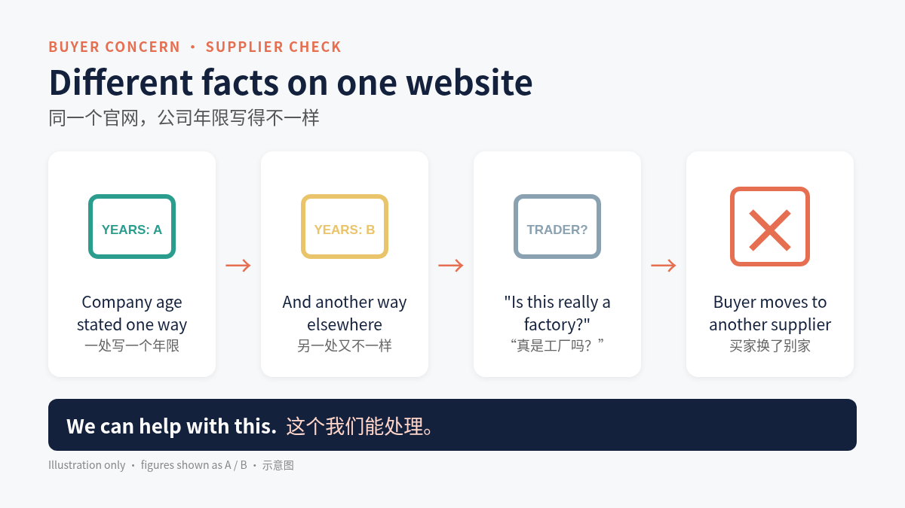

Foshan YouJian (DanQi) Furniture Co., Ltd.
Ergonomic and Executive Office Chairs, Longjiang, Shunde, Foshan, Guangdong, China
About
YouJian is an office chair manufacturer in Longjiang, Foshan, integrating R&D, design, production and sales, with its own design team, assembly-line production and patented chair designs, selling to domestic and overseas dealers and office projects. (source)
Supplier check: what buyers worry about most
Careful importers compare the facts on a website. When the company age is stated differently in different places, they start to ask whether this is really a factory, and many move on to another supplier.

We can help with this.
What they make
- Ergonomic office chairs
- Executive chairs
- Office seating solutions (OEM / ODM)
Source: https://www.youjianoffice.com/
Key facts, per public pages, to be confirmed with you
| Address | Building A, No. 10 Jianshe Road, Chenyong Community, Longjiang Town, Shunde District, Foshan City, Guangdong, China (source) |
|---|---|
| Established | To be confirmed with you. |
| Factory or trader | Factory with own design team and assembly-line production, as stated by the company (source) |
| MOQ | One piece (shipping paid by buyer), as stated in FAQ (source) |
| Delivery, standard products | Within 5 days for standard products in standard packaging, as stated in FAQ (source) |
| Warranty | 3-5 years depending on model, as stated in FAQ (source) |
| OEM / ODM | Yes, including own-logo printing (source) |
| Design | Products with appearance patent certificates, as stated by the company (source) |
Factory contact (as published by the factory)
To be confirmed with you
- Years of experience: To be confirmed with you.
- Certifications: To be confirmed with you. Home page banner mentions BIFMA and EN1335; no certificate or test report seen.
- Staff, factory area, countries served: To be confirmed with you. Counters on the home page did not render figures.
- Main export markets / annual export value: To be confirmed with you. Not published on the pages read.
What buyers verify
States it is a factory (not a trading company) with its own design team and assembly-line production; address Building A, No. 10 Jianshe Road, Chenyong Community, Longjiang. Standard products: within 5 days in standard packaging (FAQ). Warranty stated as 3-5 years depending on model. (source)
Other buyer-check items: To be confirmed with you.
Sources
- Official site: https://www.youjianoffice.com/
- About page: https://www.youjianoffice.com/about-us/
- Contact page: https://www.youjianoffice.com/contact-us/
Source and status note
All non-blank content above is reorganised from the public pages listed in Sources (accessed November 2026). Blank fields had no public figure or had conflicting figures across sources. This page is a draft format sample prepared by QiaoReach, an export growth service, to show how a factory's existing public data can be made readable to Google and buyer-side AI. It is not affiliated with, endorsed by, or published for Foshan YouJian Furniture, and has not been confirmed or approved by the factory.